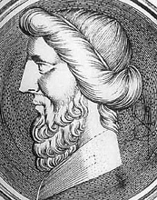

Der griechische Mathematiker und Philosoph Archytas von Tarent (428-350 v.Chr.) gilt als Begründer der mathematischen Mechanik. Ihm schreibt man die Erfindung der Schraube und des Flaschenzuges zu. Er soll ein Kinderspielzeug gebaut haben, eine hölzerne Taube, die durch Dampf angetrieben war, und etwa 15 Meter weit flog.